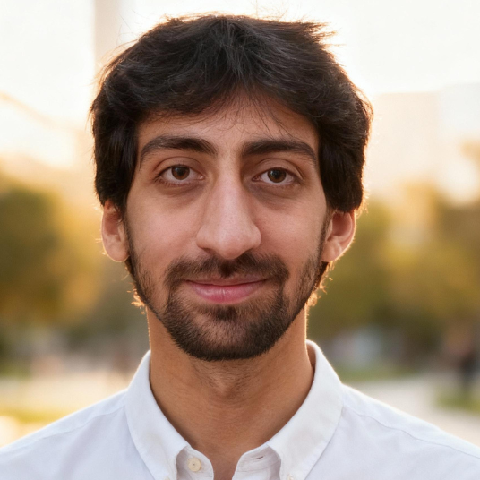

⎙ Print / Save as PDF
Ehsan Pajouheshgar
Lausanne, Switzerland
e.pajouheshgar@gmail.com
ehsan.pajouheshgar@epfl.ch
pajouheshgar.github.io
Google Scholar
LinkedIn
X (Twitter)

Replace
photo.png
with your image
Education
Postdoctoral Researcher — Computer Science & Applied Mathematics
— EPFL
Aug 2025 – Present
Chair of Statistical Field Theory (Prof. C. Hongler) · Image and Visual Representation Lab (Prof. S. Süsstrunk)
Ph.D. in Computer Science
— EPFL — GPA: 5.78 / 6
Sep 2020 – Jul 2025
Supervisor: Prof. Sabine Süsstrunk
B.Sc. in Computer Engineering, Minor in Pure Mathematics
— Sharif University of Technology — GPA: 19.40 / 20
Sep 2015 – Jul 2020
Top 5 among 126 students
Technical Skills
Programming:
Python, C++ ·
Frameworks:
PyTorch, JAX, CUDA ·
Languages:
Persian & Turkish (Native), English (Fluent), French (Beginner)
Honors & Awards
2025
Distinguished Ph.D. Thesis Award
— EPFL
2024
Best Student Paper Award
— ALife 2024
2023
Teaching Assistance Excellence Award
— EPFL
2022
Best Paper Award
— SIGGRAPH 2022
2020
Doctoral Fellowship
— EDIC, EPFL
2019
Gold Medal
— Iranian National Statistics Olympiad (Ranked 1st)
2016
30th team
among 2,000+ — IEEE Xtreme Programming Competition
2014
Gold Medal
— Iranian National Physics Olympiad
Publications
Exploring the Landscape of Non-Equilibrium Memories with Neural Cellular Automata
E. Pajouheshgar
, A. Bhardwaj, N. Selub, E. Lake
Physical Review Letters (PRL)
Demo
Mesh Neural Cellular Automata
E. Pajouheshgar*
, Y. Xu*, A. Mordvintsev, E. Niklasson, T. Zhang, S. Süsstrunk
ACM TOG / SIGGRAPH 2024
Demo
DyNCA: Real-time Dynamic Texture Synthesis Using Neural Cellular Automata
E. Pajouheshgar*
, Y. Xu*, T. Zhang, S. Süsstrunk
CVPR 2023
Demo
CLIPasso: Semantically-Aware Object Sketching
Y. Vinker,
E. Pajouheshgar
, J.Y. Bo, R.C. Bachmann, A.H. Bermano, D. Cohen-Or, A. Zamir, A. Shamir
ACM TOG / SIGGRAPH 2022
★ Best Paper
NoiseNCA: Noisy Seed Improves Spatio-Temporal Continuity of Neural Cellular Automata
E. Pajouheshgar
, Y. Xu, S. Süsstrunk
ALife 2024
★ Best Student Paper
Demo
Neural Particle Automata: Learning Self-Organizing Particle Dynamics
H. Kim*,
E. Pajouheshgar*
, S. Süsstrunk, W. Jakob, J. Park
Submitted to SIGGRAPH 2026
Demo
Neural Cellular Automata: From Cells to Pixels
E. Pajouheshgar
, Y. Xu, A. Abbasi, A. Mordvintsev, W. Jakob, S. Süsstrunk
Submitted to SIGGRAPH 2026
Demo
The Mokume Dataset and Inverse Modeling of Solid Wood Textures
M. Larsson, H. Yamaguchi,
E. Pajouheshgar
, I-C. Shen, K. Tojo, C-M. Chang, et al.
ACM TOG / SIGGRAPH 2025
Volumetric Temporal Texture Synthesis for Smoke Stylization using Neural Cellular Automata
D. Wang,
E. Pajouheshgar
, Y. Xu, T. Zhang, S. Süsstrunk
BMVC 2025
Canonical Latent Representations in Conditional Diffusion Models
Y. Xu, T. Zhang,
E. Pajouheshgar
, S. Süsstrunk
Preprint
Emergent Dynamics in Neural Cellular Automata
Y. Xu,
E. Pajouheshgar
, S. Süsstrunk
ALife 2024
Optimizing Latent Space Directions for GAN-Based Local Image Editing
E. Pajouheshgar
, T. Zhang, S. Süsstrunk
ICASSP 2022
ChOracle: A Unified Statistical Framework for Churn Prediction
A. Khodadadi, A. Hosseini,
E. Pajouheshgar
, F. Mansouri, H.R. Rabiee
IEEE TKDE 2020
Back to Square One: Probabilistic Trajectory Forecasting without Bells and Whistles
E. Pajouheshgar
, C.H. Lampert
NeurIPS Workshop 2018
Work Experience
Data Scientist
— Cafe Bazaar (Balad Maps), Tehran, Iran
May 2019 – Jul 2020
Computer vision team at Balad, a map and navigation service (Iran's equivalent of Google Maps)
Extracted structured information from proprietary KITTI-like driving datasets
Developed road extraction pipelines from satellite and aerial imagery
Teaching Experience
Teaching Assistant
— EPFL, Lausanne
Spring 2026
Cellular Automata and Models of Artificial Life
(MSc)
2022 – 2024
Computational Photography
(MSc)
Fall 2023
Information, Computation, Communication
(BSc)
Fall 2022
Linear Algebra
(BSc)
Fall 2021
Machine Learning
(MSc)
Teaching Assistant
— Sharif University of Technology, Tehran
Spring 2019
Deep Learning
(MSc)
Spring 2019
Stochastic Processes
(MSc)
Fall 2018
Machine Learning
(MSc)
Spring 2017
Advanced Programming in Java
(BSc)
Fall 2016
Probability & Statistics
(BSc)
Physics Instructor
— Farzanegan 1 & Allame Helli High Schools, Tehran
2014 – 2016
Thermodynamics, Kinetic Theory, Electrodynamics, Experimental Physics (Olympiad students)